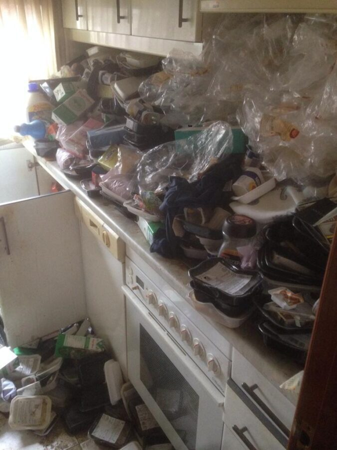

Al pensar en el acaparamiento compulsivo o Síndrome de Diógenes, la mayoría de la gente imagina montones de basura, cantidades excesivas de artículos y una casa desordenada. Pero, ¿y si una de estas "posesiones" es la comida? ¿Cómo puede un acaparador considerar que la comida tiene valor monetario? Puede haber un par de razones.
En primer lugar, cuando amas a alguien que exhibe un comportamiento de Síndrome de Diógenes, estás enfrentando uno de los mayores obstáculos a superar debido al vínculo emocional con esa persona. El conflicto surge cuando el acaparador no tiene idea de que su comportamiento es visto como anormal y hacer algo al respecto es lo más alejado de su mente. Entonces, ¿Qué puede hacer un miembro de la familia?

Cuando acumular comida es parte del comportamiento compulsivo general de la persona, piense en un posible momento de su vida en el que haya tenido dificultades para alimentarse. Pudo haber sido porque eran demasiado vagos para cocinar por sí mismos o tal vez no tenían el dinero para comprar comida.
Cuando vaya de compras, ¿el acaparador comprará varios artículos que estén en oferta? Esta es una indicación de que la persona puede estar acumulando comida pensando que esta es la forma de ahorrar más dinero.
Estas son las razones más comunes que utilizará un acaparador para mantenerse firme. Si lo desafía, es probable que se produzca una acalorada discusión.
En esta coyuntura, es fundamental dejar que su ser querido vea que usted comprende su razonamiento. No aceptar, pero entender. Empatizar con ellos no significa que apruebes su comportamiento, pero les mostrará que estás dispuesto a escucharlos y entender de dónde vienen.
El primer paso para ayudar a una persona que está acumulando comida es evaluar si está dispuesta a dejar que usted la ayude o no.
Legalmente hablando, si el acaparador es lo suficientemente mayor, mentalmente competente y su desorden no amenaza de inmediato su vida o la vida de los demás, tiene todo el derecho a acumular. Incluso cuando las entidades externas, como la Junta de Salud local o el propietario, se enteran de la situación, la persona aún puede negarse a hacer algo al respecto. Incluso si eso significa recibir una citación o correr el riesgo de ser desalojado.
Cuando lleven el desorden al extremo, lo más probable es que provoque una infestación de animales e insectos no deseados. Esto está casi garantizado en la casa de una persona que está acumulando comida. ¿Por qué es este un problema tan grande? La comida que queda por ahí generalmente se cubre con otro desorden y se convierte en una invitación abierta para insectos, ratones, ratas e incluso mapaches.
Hacer que un acumulador compulsivo admita que su problema se ha salido de control es, en el mejor de los casos, un desafío. Sin embargo, puede tomar medidas específicas para ayudarlos a cambiar su forma de pensar.
En sus discusiones con un Síndrome de Diógenes, hay varias pautas que debe seguir al abordar el problema del acaparamiento con ellos.
En primer lugar, debe resistir cualquier tentación de entablar una discusión. Esto solo los pondrá en un estado de ánimo defensivo porque realmente creen que hay una buena razón detrás de sus acciones. Su proceso de pensamiento los lleva a creer que sus artículos tienen un valor y se pueden vender a un precio alto. Además, hay una cierta cantidad de valor sentimental adjunto a la mayoría de los artículos. Al criticar su colección y su comportamiento, estás juzgando las cosas que aprecian mucho.
Al tratar de ayudar a un acaparador compulsivo, otra técnica comienza cuando usted mismo se da cuenta de que no está tratando con un niño, sino con un adulto que es libre de vivir su vida a su manera. Si aún no lo ha hecho, intente sacar a relucir el tema de la cantidad masiva de artículos en su casa y la razón por la que recolectan tanto. Pregúnteles si les gustaría hacer algo al respecto, en lugar de decirles lo que deberían hacer. Tu ser querido no puede controlar este trastorno por lo que debes poder aceptar ese hecho sin condición. Honestamente, no están tratando de lastimarte. Verá, su comportamiento no es una elección consciente.